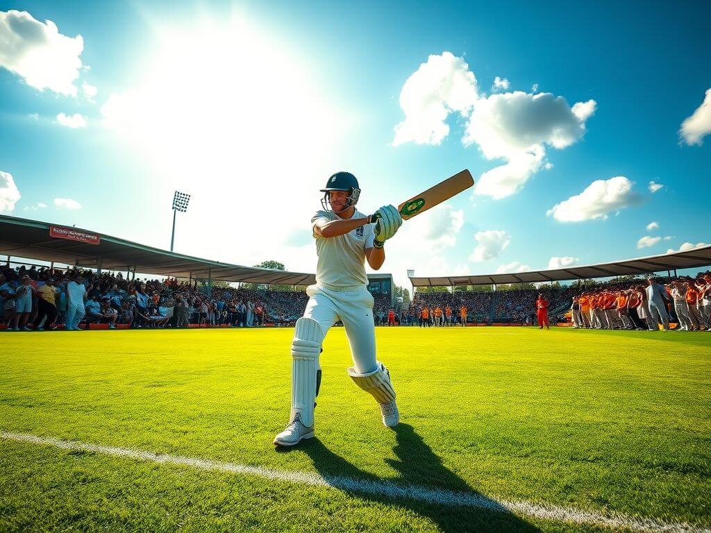

Fantasy Cricket
Immerse yourself in the captivating world of fantasy cricket, where your passion for the sport meets tactical mastery. Assemble your ultimate team, make pivotal decisions in real-time, and compete with cricket fans worldwide. From selecting the ideal batsman to the finest bowler, Fantasy Hot equips you with the tools to outperform your rivals. This isn't a game of chance—it's a test of your expertise and strategic thinking!
Why Fantasy Cricket is Transformative
Fantasy cricket goes beyond being a hobby—it's a unique way to engage deeply with the sport. On Fantasy Hot, you can craft your dream team, make informed tactical choices, and compete with cricket enthusiasts across the nation. Whether you follow Test matches, ODIs, or T20s, fantasy cricket intensifies the excitement of every game.
Our platform is built to enhance your cricketing journey. Explore player statistics, track live games, and make strategic adjustments in real-time to outmaneuver your competitors. Here, it’s all about strategy, skills, and your love for cricket.
Join NowMastery and Skill Over Chance
At Fantasy Hot, your achievements hinge on your knowledge and strategic acumen. How you construct your team, evaluate player stats, and react during matches dictates your success.
This is not luck-based—it’s a skill-driven challenge. Your triumphs are a testament to your cricket expertise, calculated strategies, and ability to outthink your opponents.
Decoding the Game Format
Fantasy cricket employs various scoring formats, including Roto, head-to-head Roto, head-to-head points, and total points. Let’s explore these formats:
Head-to-head Roto: Compete weekly against another player by accumulating superior stats in categories like runs, wickets, and catches. For instance, if your team outperforms in all categories, you win the match-up.
Head-to-head points: Similar to Roto but focuses on scoring fantasy points based on preset values assigned to each stat, like +1 for runs or +10 for wickets.
Roto or Categorical: Points are awarded based on category standings, with the top-performing team earning maximum points in each category.
Points: A straightforward format where the team with the most cumulative points wins the season.
Other formats include long-term Keeper Leagues, single-season competitions, and Dynasty Leagues for continuous player retention. Daily fantasy contests also offer dynamic, salary-based team management for short-term challenges.
Fantasy Cricket Tips and Strategies
Success in fantasy cricket demands preparation. Here are some expert tips:
- Know the Rules: Learn the scoring system, formats, and player values to optimize your choices.
- Smart Drafting: Choose players based on form, match conditions, and team dynamics.
- Track Injuries: Avoid selecting injury-prone players and keep your squad healthy.
- Stay Updated: Monitor live matches and make lineup adjustments as needed.
- Use Power-Ups Strategically: Leverage boosts like the Golden Bat for crucial matches.
Getting Started with Fantasy Cricket
Assemble Your Team
Select top players across categories to build a balanced and competitive team.
Dive into Player Stats
Analyze stats and conditions to make informed player selections.
Track Live Matches
Monitor matches and adjust your lineup to stay competitive.
Compete to Win
Join leagues, apply strategies, and aim for the top rewards.
Fantasy Cricket Rules
1. Build Your Team
Create a team of 11 players including batsmen, bowlers, all-rounders, and a wicketkeeper, following the rules of selection.
2. Scoring System
Points are awarded based on player performance. For example, +1 point for a run, +10 for a wicket.
3. Choose Leaders
Your captain earns double points; vice-captain gets 1.5x points. Pick wisely!